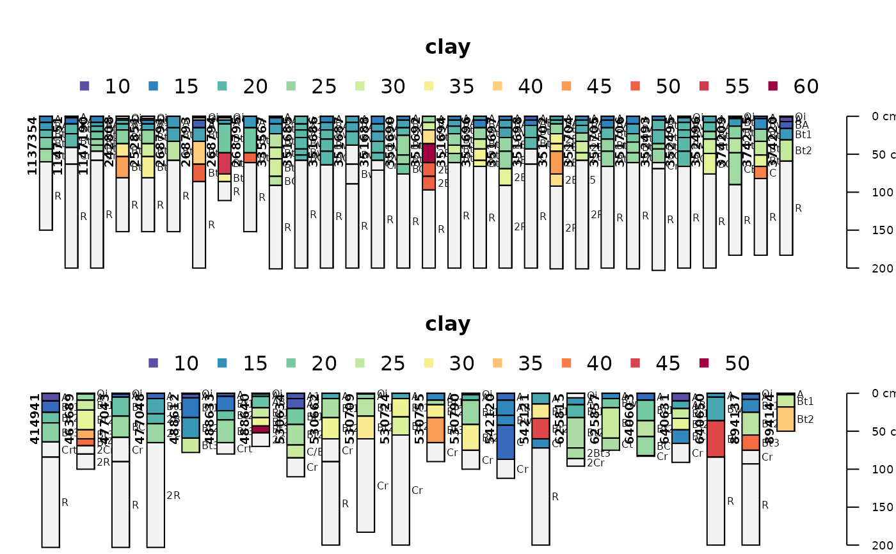
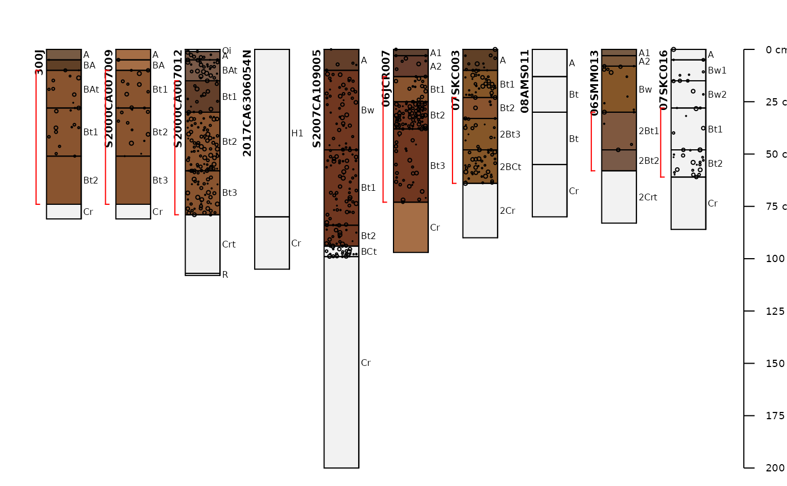
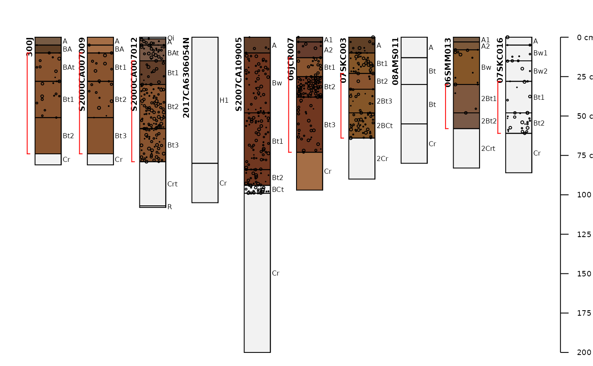

Example SoilProfilecollection Objects Returned by fetchNASIS.
Source: R/soilDB-package.R
loafercreek.RdSeveral examples of soil profile collections returned by
fetchNASIS(from='pedons') as SoilProfileCollection objects.
Examples
# \donttest{
library(aqp)
# load example dataset
data("gopheridge")
# what kind of object is this?
class(gopheridge)
#> [1] "SoilProfileCollection"
#> attr(,"package")
#> [1] "aqp"
# how many profiles?
length(gopheridge)
#> [1] 52
# there are 60 profiles, this calls for a split plot
par(mar=c(0,0,0,0), mfrow=c(2,1))
# plot soil colors
aqp::plotSPC(gopheridge[1:30, ], name='hzname', color='soil_color')
aqp::plotSPC(gopheridge[31:60, ], name='hzname', color='soil_color')
# need a larger top margin for legend
par(mar=c(0,0,4,0), mfrow=c(2,1))
# generate colors based on clay content
aqp::plotSPC(gopheridge[1:30, ], name='hzname', color='clay')
aqp::plotSPC(gopheridge[31:60, ], name='hzname', color='clay')

# single row and no labels
par(mar=c(0,0,0,0), mfrow=c(1,1))
# plot soils sorted by depth to contact
aqp::plotSPC(gopheridge, name='', print.id=FALSE, plot.order=order(gopheridge$bedrckdepth))
 # plot first 10 profiles
aqp::plotSPC(
gopheridge[1:10, ],
name = 'hzname',
color = 'soil_color',
label = 'upedonid',
id.style = 'side'
)
# add rock fragment data to plot:
aqp::addVolumeFraction(gopheridge[1:10, ], colname='total_frags_pct')
# add diagnostic horizons
aqp::addDiagnosticBracket(gopheridge[1:10, ], kind='argillic horizon', col='red', offset=-0.4)
# plot first 10 profiles
aqp::plotSPC(
gopheridge[1:10, ],
name = 'hzname',
color = 'soil_color',
label = 'upedonid',
id.style = 'side'
)
# add rock fragment data to plot:
aqp::addVolumeFraction(gopheridge[1:10, ], colname='total_frags_pct')
# add diagnostic horizons
aqp::addDiagnosticBracket(gopheridge[1:10, ], kind='argillic horizon', col='red', offset=-0.4)
 ## loafercreek
data("loafercreek")
# plot first 10 profiles
aqp::plotSPC(
loafercreek[1:10, ],
name = 'hzname',
color = 'soil_color',
label = 'upedonid',
id.style = 'side'
)
# add rock fragment data to plot:
aqp::addVolumeFraction(loafercreek[1:10, ], colname='total_frags_pct')
# add diagnostic horizons
aqp::addDiagnosticBracket(loafercreek[1:10, ], kind='argillic horizon', col='red', offset=-0.4)

# }
## loafercreek
data("loafercreek")
# plot first 10 profiles
aqp::plotSPC(
loafercreek[1:10, ],
name = 'hzname',
color = 'soil_color',
label = 'upedonid',
id.style = 'side'
)
# add rock fragment data to plot:
aqp::addVolumeFraction(loafercreek[1:10, ], colname='total_frags_pct')
# add diagnostic horizons
aqp::addDiagnosticBracket(loafercreek[1:10, ], kind='argillic horizon', col='red', offset=-0.4)

# }